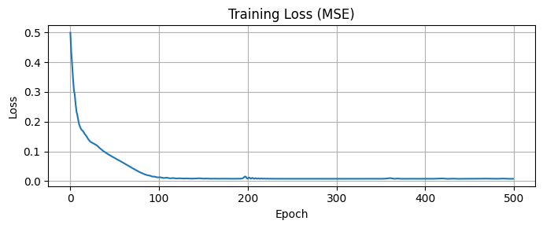
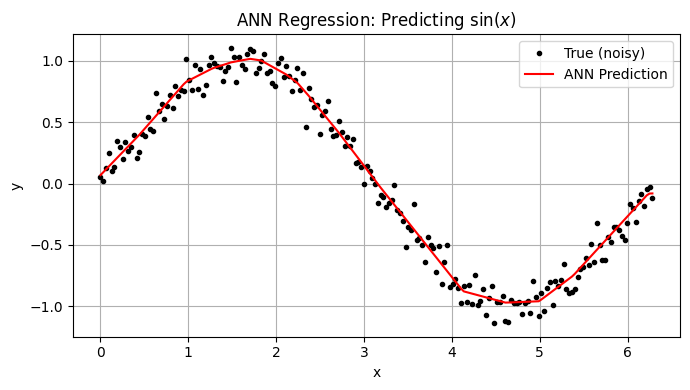

14.6 ANN for Prediction Engines (Regression)#
In regression, artificial neural networks predict continuous output values rather than discrete class labels. This makes ANNs well-suited for problems where the goal is to model a real-valued function based on input features.
The output layer typically has one neuron (or multiple for multi-output regression) with a linear activation function (no sigmoid/softmax). The network is trained to minimize a regression loss function such as:
Mean Squared Error (MSE)
Mean Absolute Error (MAE)
Huber loss (for robustness to outliers)
Example use cases:
Predicting concrete compressive strength from mix proportions (classic UCI dataset).
Forecasting hydrologic discharge or rainfall-runoff responses from watershed conditions.
Estimating continuous parameters in structural health monitoring (e.g., crack width as a real value).
PyTorch ANNRegression Template#
import torch
import torch.nn as nn
class ANNRegression(nn.Module):
def __init__(self, input_size):
super(ANNRegression, self).__init__()
self.fc1 = nn.Linear(input_size, 64)
self.fc2 = nn.Linear(64, 32)
self.fc3 = nn.Linear(32, 1) # single continuous output
def forward(self, x):
x = torch.relu(self.fc1(x))
x = torch.relu(self.fc2(x))
x = self.fc3(x) # no activation
return x
# Use MSE loss
model = ANNRegression(input_size=10)
criterion = nn.MSELoss()
optimizer = torch.optim.Adam(model.parameters(), lr=0.001)
Hybrid Roles#
ANNs can be designed to output both classifications and continuous values:
Multi-head architectures:
One branch for classification (e.g., crack vs. no crack).
Another branch for a regression target (e.g., estimated crack width or depth).
Loss functions are combined, e.g.:
\(L = L_{\text{class}} + \lambda L_{\text{regression}}\)
where \(\lambda\) is a weighting factor.
When Regression ANNs Outperform Traditional Models#
Non-linear relationships: ANNs excel when relationships between inputs and outputs are highly non-linear and traditional regression struggles.
High-dimensional inputs: For example, using pixel intensities to predict a continuous variable (like surface roughness).
Data-rich problems: ANN regression generally needs more data than linear regression to avoid overfitting.
Example Applications in Civil Engineering#
Predicting scour depth at bridge piers (continuous output).
Modeling concrete creep or shrinkage strains over time.
Rainfall-runoff models where output is continuous discharge or flood peak.
Key Differences from Classification#
Component |
Classification |
Regression |
|---|---|---|
Output Layer |
1+ nodes with sigmoid/softmax |
1+ nodes with linear activation |
Loss Function |
CrossEntropyLoss / NLLLoss |
MSELoss / L1Loss / Huber |
Target |
Class label (0, 1, etc.) |
Continuous value(s) |
Simple Example: Predicting a Sine Function#
We’ll train a neural network to approximate the function:
This simulates a scenario such as sensor signal smoothing or continuous variable estimation in engineering models.
PyTorch Code: ANN Regression Demo#
import torch
import torch.nn as nn
import numpy as np
import matplotlib.pyplot as plt
# Generate synthetic data
np.random.seed(42)
x_vals = np.linspace(0, 2*np.pi, 200)
y_vals = np.sin(x_vals) + 0.1 * np.random.randn(*x_vals.shape)
# Convert to PyTorch tensors
X = torch.tensor(x_vals, dtype=torch.float32).unsqueeze(1)
Y = torch.tensor(y_vals, dtype=torch.float32).unsqueeze(1)
# Define ANN model for regression
class ANNRegression(nn.Module):
def __init__(self):
super(ANNRegression, self).__init__()
self.fc1 = nn.Linear(1, 32)
self.fc2 = nn.Linear(32, 16)
self.fc3 = nn.Linear(16, 1)
def forward(self, x):
x = torch.relu(self.fc1(x))
x = torch.relu(self.fc2(x))
return self.fc3(x) # Linear output
# Initialize model
model = ANNRegression()
criterion = nn.MSELoss()
optimizer = torch.optim.Adam(model.parameters(), lr=0.01)
# Training loop
epochs = 500
losses = []
for epoch in range(epochs):
model.train()
optimizer.zero_grad()
predictions = model(X)
loss = criterion(predictions, Y)
loss.backward()
optimizer.step()
losses.append(loss.item())
# Plot training loss curve
plt.figure(figsize=(7, 3))
plt.plot(losses)
plt.title("Training Loss (MSE)")
plt.xlabel("Epoch")
plt.ylabel("Loss")
plt.grid(True)
plt.tight_layout()
plt.show()
# Plot predictions vs true
model.eval()
with torch.no_grad():
Y_pred = model(X).squeeze().numpy()
plt.figure(figsize=(7, 4))
plt.plot(x_vals, y_vals, 'k.', label='True (noisy)')
plt.plot(x_vals, Y_pred, 'r-', label='ANN Prediction')
plt.title("ANN Regression: Predicting $\sin(x)$")
plt.xlabel("x")
plt.ylabel("y")
plt.legend()
plt.grid(True)
plt.tight_layout()
plt.show()


Interpretation#
The ANN learned a smooth approximation to the sine function.
Even with noise, the model generalized well, showing how ANNs can model nonlinear regression surfaces.
This setup easily extends to multi-input or multi-output regression problems.
Suggested Experiments#
Compare above to a Support Vector Regression (SVR) using same synthetic data.
Increase/decrease hidden layer sizes.
Try different activation functions (e.g., Tanh, LeakyReLU).
Replace MSELoss with L1Loss or HuberLoss.
Extend to 2D inputs: predict \(z=sin(x+y) \text{from} (x,y)\)